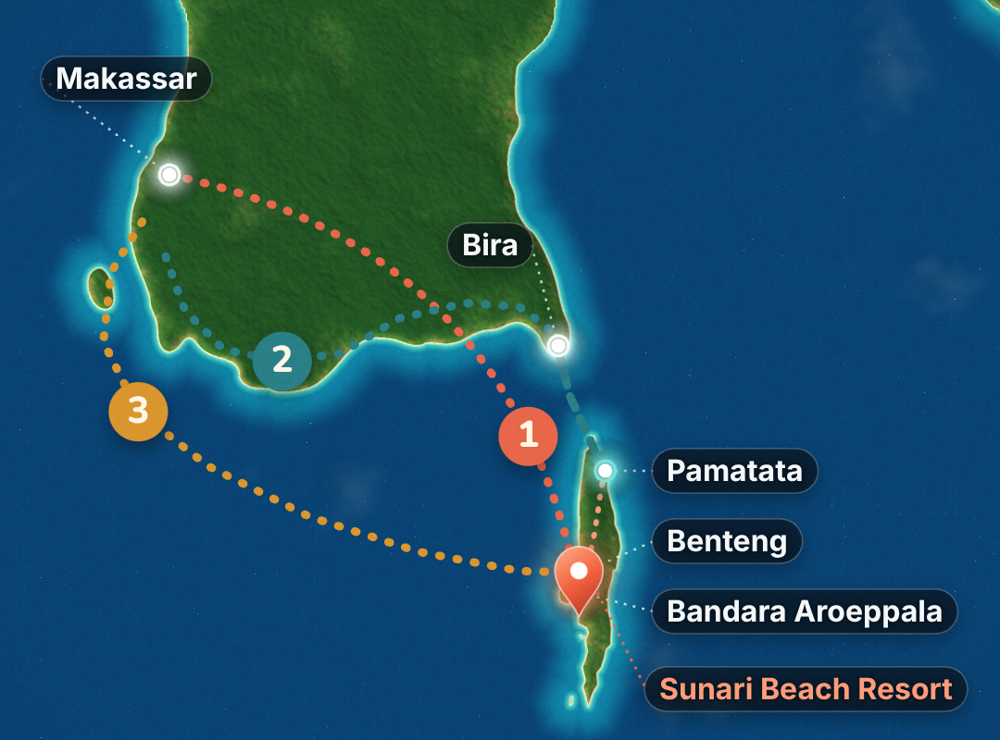

Penjemputan lokal
Bandara & Pelabuhan di Selayar
- Aroeppala · Pamatata · Benteng
- Mobil AC yang nyaman
- Driver lokal, langsung ke resort
Travel Guide • Selayar
Panduan lengkap rute udara, laut, dan layanan penjemputan.
Peta Rute

UdaraPesawat Makassar – Aroeppala
Darat & FeriVia Bira – Pamatata
Kapal LangsungMakassar – Benteng
Rute Akses
TercepatStep 01 · Penerbangan
Step 02 · Perjalanan darat
Jadwal penerbangan menyesuaikan maskapai (disarankan cek H-7).
Rute Akses
Scenic RouteStep 01 · Perjalanan darat
Step 02 · Penyeberangan
Step 03 · Perjalanan darat
Tersedia jadwal penyeberangan pagi & siang.
Rute Akses
Tanpa TransitKM Dharma Kartika III · Makassar langsung ke Selayar.
Step 01 · Pelayaran malam
Step 02 · Perjalanan darat
Kapal tidak berangkat setiap hari. Cek jadwal terbaru di PT Dharma Lautan Utama (DLU) atau tanyakan admin kami.
Layanan Resort
Kami jemput, Anda cukup menikmati perjalanan.
Penjemputan lokal
Paket transfer lengkap
Konfirmasi jadwal kedatangan Anda minimal H-2 sebelum check-in.
Ringkasan
Lokasi resort
Desa Patikarya, Kec. Bontosikuyu, Kepulauan Selayar
Pantai Sunari · Jl. Poros Benteng – Appatana KM 14
Udara
Via Bandara H. Aroeppala
Laut
Feri Bira – Pamatata · KM Dharma Kartika
Pickup
Konfirmasi H-2
WhatsApp 0821-8903-3044